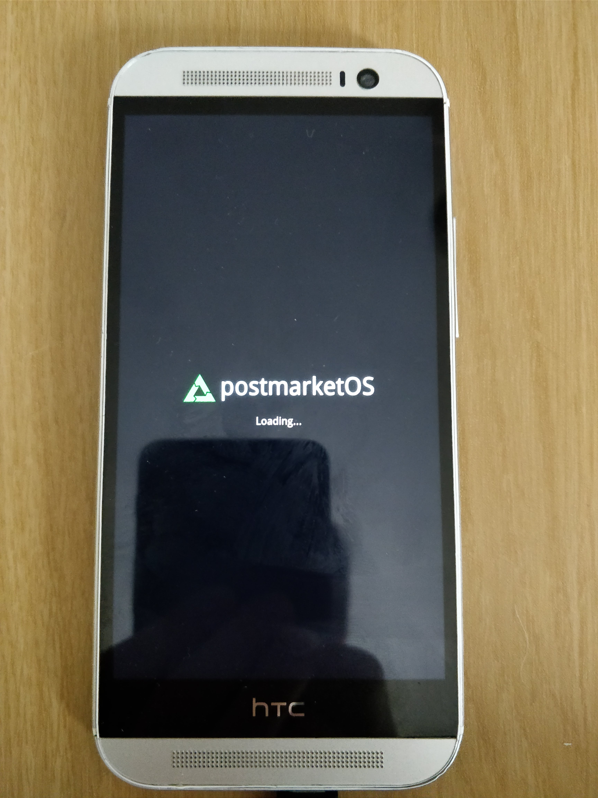

HTC One M8 (htc-m8)
|
 HTC One M8 | |
| Manufacturer | HTC |
|---|---|
| Name | One M8 |
| Codename | htc-m8 |
| Released | 2014 |
| Category | testing |
| Original software | Android |
| Hardware | |
| Chipset | Qualcomm Snapdragon 801 (MSM8974AB) |
| CPU | 4x 2.45 GHz Krait 400 |
| GPU | Adreno 330 |
| Display | 1080x1920 Super LCD3 |
| Storage | 16 or 32 GB |
| Memory | 2 GB LPDDR3 |
| Architecture | armv7 |
{kind=link}
| USB Networking |
Works
|
|---|---|
| Flashing |
Works
|
| Touchscreen |
Works
|
| Display |
Works
|
| WiFi |
Works
|
| FDE | |
| Mainline | |
| Battery |
Works
|
| 3D Acceleration | |
| Audio | |
| Bluetooth | |
| Camera |
Broken
|
| GPS | |
| Mobile data |
Broken
|
| SMS |
Broken
|
| Calls |
Broken
|
| USB OTG |
Works
|
| NFC | |
| Accelerometer | |
|---|---|
| Magnetometer | |
| Ambient Light | |
| Proximity | |
| Hall Effect | |
| Barometer | |
| Power Sensor | |
| Camera Flash | |
|---|---|
| Keyboard | |
| Touchpad | |
| USB-A | |
| HDMI/DP | |
| Ir TX | |
| Ir RX | |
| Stylus | |
| Haptics | |
| Ethernet | |
| FOSS bootloader | |
Contributors
Maintainers
Users owning this device
- Arthurlutz (Notes: LineageOS 14.1 (weak battery))
- GeraltvonNVIDIA (Notes: Stucks at Bootscreen)
- Maalos (Notes: postmarketOS installed)
- Manty
- Syboxez (Notes: My favorite phone in terms of hardware)
Bootloader unlocking
Although HTC supports unlocking the bootloader through an online service on https://www.htcdev.com/, this makes postmarketOS depend on HTC in the long term, which is dangerous. There seems to be some exploit for the M8, which was not tested yet on this device: https://gus33000.me/2019/01/05/secureboot-flaw-for-all-wp-devices-literally/
How to enter flash mode
Hold the Power and Vol- button while the device is off, or hold the Vol- and then hold the Power button while the phone is on so it will force-reboot to the hboot mode, then select fastboot.
Installation
The Device Tree image is not generated by pmbootstarp properly. Copying one from a TWRP boot image into the initramfs then recompiling works. Use this tool (or download the whole dt.img from me) to unpack the TWRP image, then copy the boot.img-htc-m8-dt file to the ~/.local/var/pmbootstrap/chroot_rootfs_htc-m8/boot, rename it to dt.img and pmbootstrap install. After that, just use pmbootstrap flasher flash_kernel and pmbootstrap flasher flash_rootfs.
| The device might freeze after flashing. If it doesn't boot after 5 minutes, force-reboot it (hold the power button until the device restarts) |